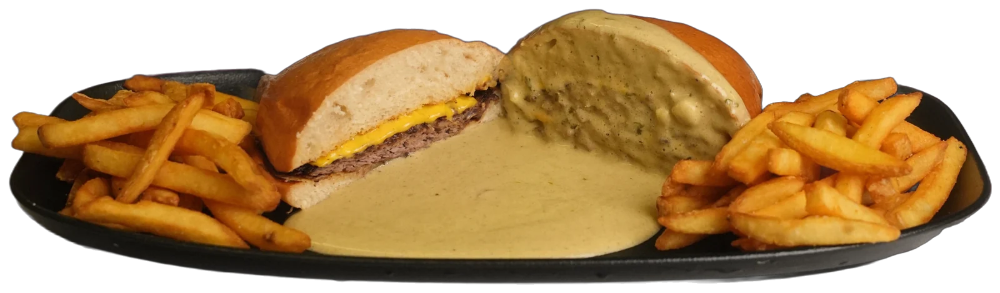
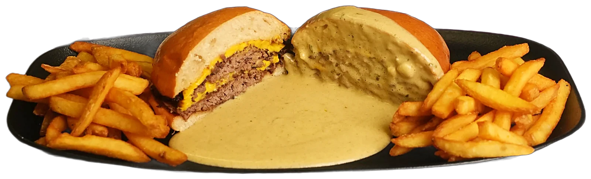
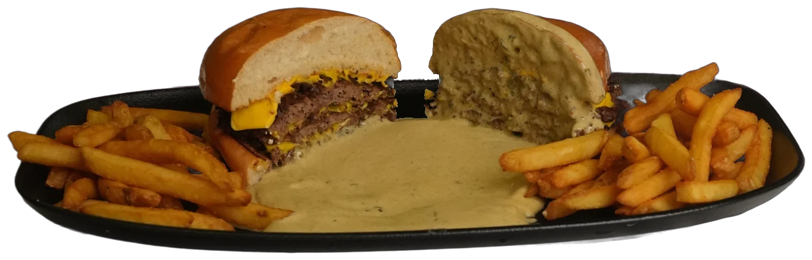

01
El Smash
Carnes finas aplastadas en la plancha ardiente: los bordes se caramelizan y quedan crujientes. Cheddar fundido.
Smash 160 g2 carnes smashPrecio por confirmar
Con patatas fritas y salsa Café de Paris, para mojar cada bocado.
Pedir · Smash 160 g